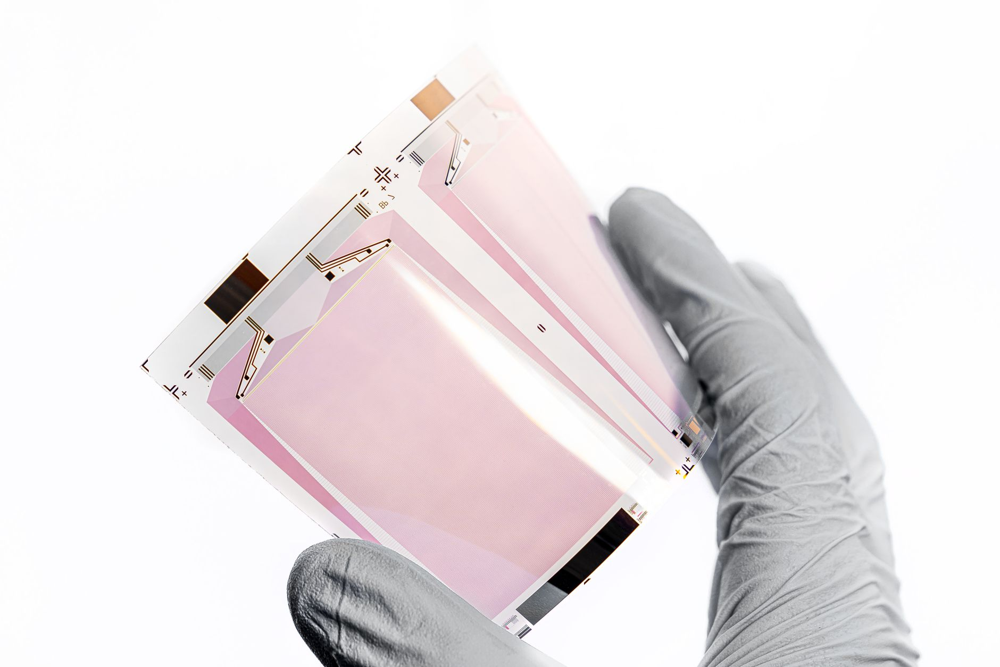

갈륨 가격 9배 폭등 3년, GaN 소재 원가 위기

중국은 2023년 8월 갈륨·게르마늄 수출허가제를 발동했다. 시행 직전 kg당 220달러이던 갈륨 가격은 현재 약 2,000달러로 9배 급등했으며, 전 세계 갈륨 공급의 약 80%를 쥐고 있던 중국이 수출 승인을 사실상 차단하면서 글로벌 시장에서 대체 공급처 확보 경쟁이 벌어지고 있다.
GaN(질화갈륨) 전력반도체 웨이퍼 기판은 6인치 1장당 갈륨 약 3g을 소모한다. 전기차·AI 서버 전력 변환 수요 확대로 GaN 파워 디바이스 시장은 2023~2028년 연평균 25% 성장이 예상되는데, 갈륨 단가 급등으로 GaN 소재 원가 비중이 3년 전 2~3%에서 현재 15~20%로 뛰었다. 이 수준이면 GaN의 가격 경쟁력이 Si-MOSFET 대비 희석되는 분기점에 근접한다.
한국 연간 갈륨 수요는 40~50t으로 추정되며 사실상 전량을 수입에 의존해 왔다. 고려아연이 2028년부터 연 15.5t 생산을 선언했으나 이는 수요의 30~40%에 불과하다. 일본은 4개월간 봉쇄 후 JX금속 등 자국 정련 업체의 협상 채널을 통해 수입이 재개됐지만, 동일한 채널을 갖추지 못한 한국에 대한 해제 신호는 현재 없다.
공급망 인텔리전스 관점에서 이번 3년 결산이 보여주는 패턴은 명확하다. 중국은 가격 급등 유발에서 공급 물리적 차단으로 전략을 고도화했다. 갈륨 9배 폭등은 특정 업체 손익 문제가 아니라 국내 GaN 전력반도체 산업 전체의 원가 기반이 재설계돼야 함을 의미한다.
GaN 소재 위기는 AI 붐과 정확히 역방향 타이밍에 발생했다. AI 서버 전력 밀도가 높아지면서 GaN 파워 컨버터 수요가 폭발하는 시점에 핵심 소재 공급이 막혔다. 삼성전기·LG이노텍의 파워모듈 사업부와 SK파워텍 등이 직접적인 원가 부담 구간에 진입했으며, 고객사 납품 단가 재협상 없이는 마진 압박이 불가피하다.
국내 SiC·GaN 웨이퍼 스타트업이 더 취약하다. 볼륨이 작아 대형 구매처 대비 20~30% 높은 조달 단가를 감수해야 하며, 시리즈 B~C 단계 기업 대부분이 갈륨 장기공급 계약 없이 스팟 시장에 노출된 상태다. 투자 라운드에서 원가 불확실성이 밸류에이션 할인 요인으로 작용하고 있다.
캐나다·독일의 갈륨 재생 정련 업체가 수혜를 본다. 독일 Recylex와 캐나다 5N Plus는 갈륨 재생 정련 점유율을 2021년 5% 미만에서 현재 15%까지 끌어올렸다. 일본 JX금속은 국내 정련 능력 확장으로 연 10t 이상 독자 공급 체계를 구축 중이며, 이들 3사가 현재 공급 부족 구간의 협상 우위를 확보했다.
고려아연은 2028년 양산 전이라도 갈륨 생산 선언 자체만으로 국내 공급망 협상에서 유리한 위치에 선다. 장기공급 MOU를 원하는 국내 반도체·광통신 업체를 상대로 프리미엄 계약 조건을 제시할 수 있으며, 2025~2027년 브리지 수요를 어떻게 채우느냐가 실질 수익화 타임라인을 결정한다.
삼성전기·LG이노텍 등 자동차·AI 서버용 GaN 파워모듈 업체는 갈륨 원가 급등의 직격탄을 맞는다. 완성차 OEM 대상 장기공급 계약에 원자재 연동 조항이 없다면 가격 충격이 마진을 잠식한다. 현대차·기아향 GaN 인버터 납품 업체는 2025~2027년 계약 재협상 시기가 최대 위험 구간이다.
국내 GaN 웨이퍼 기판 스타트업 생태계가 더 큰 압박을 받는다. 6N(99.9999%) 순도 갈륨은 4N 대비 단가가 40~60% 더 높은데, 소규모 업체는 장기계약으로 고정 단가를 확보하기 어렵다. 기술 경쟁력이 있어도 소재 원가 구조 불안정이 사업화 타임라인을 늦추는 핵심 변수가 됐다.
GaN 파워 디바이스 업체 투자자라면 납품 계약서에 원자재 연동(escalation) 조항이 포함됐는지 먼저 확인해야 한다. 이 조항 없이는 갈륨 9배 폭등이 그대로 마진을 잠식하며, 2025~2026년 실적 미스의 구조적 원인이 될 수 있다.
2028년 고려아연 양산 전 브리지를 담당할 캐나다·독일 정련 업체와의 장기공급 MOU를 지금 협상해야 한다. 연 5~10t 규모라도 고정 단가 계약을 확보하지 않으면 스팟 시장 가격 수용자 신세를 벗어날 수 없다. JX금속(일본), 5N Plus(캐나다), Recylex(독일) 세 곳이 현재 장기계약 협상 가능한 실질 상대다.
실제 조달 현장에서는 — 갈륨 계약에서 가장 자주 발생하는 분쟁이 순도 표기 문제다. GaN 웨이퍼 기판에는 6N 이상이 필요한데, 공급 업체가 5N 물량을 혼입해 납품하는 사례가 2023~2024년 국내에서 다수 보고됐다. 분석 성적서(CoA) 첨부와 입고 후 자체 ICP-MS 검증을 계약 조건에 명시하지 않으면 불량 로트가 라인을 통과한다.
이 포스팅은 쿠팡 파트너스 활동의 일환으로 수수료를 제공받습니다.